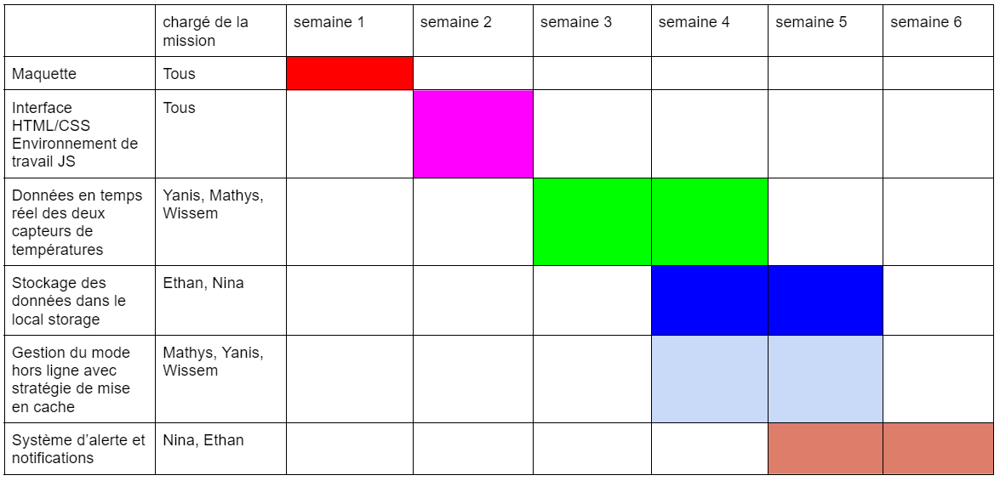

Capteur Interieur
-
min: - max: -
-
min: - max: -
-
min: - max: -
| Exterieur ⟠ | Interieur ⟠ | Date ⟠ |
| Message ⟠ | Date ⟠ |
Connectez vous
Une notice explicative de notre site est disponible à
cette adresseNous sommes 5 membres à avoir contribué au projet. Voici un diagramme de Gantt reprenant nos principaux objectifs tout au long des semaines de projet
Garant d'une organisation de code adaptée au travail de groupe et fiable. Responsable du modèle MVC et de la liaison entre les scripts.
Chargés d'assurer la bonne connection avec le serveur web socket ou http. Chargés d'assurer le changement de méthode de récupération de données en cas de problème. Chargés d'assurer la detection d'une déconnection ou d'une reconnection. Chargés de la création d'un graphique avec graph.js.
Chargés du bon stockage des valeurs obtenues dans le local storage et de leur récupération. Chargés de la génération et de la mise à jour des tableaux
Mise en place d'une progressive web app avec le manifest et le service worker. Chargés d'assurer la mise en cache et le fonctionnement hors ligne du site web.
Chargés de la création des classes alert et sensor ainsi que du système de notification et d'alerte.
Pour réaliser ce projet, nous avons décidé d'utiliser un Github pour le versionnage de notre code. Nous avons décidé d'adopter ce qui pourrait se rapprocher d'un modèle MVC afin de pouvoir faire en sorte que chacun travaille sur ses fichiers.
Ainsi nous avons un répertoire controllers qui contient tous les scripts catégorisés par fonctionnalités. Nous avons également un répertoire models qui contient des objets pour les alertes et les données récoltées des capteurs. Ces objets simplifient drastiquement le code des contrôleurs et rend notre code plus modulable. Le point qui s'éloigne du MVC concerne les vues. Ici nous avons une unique vue : index.html car cela nous évite de devoir regénérer le graphique ou les tableaux à chaque changement de page. Le changement de page est géré grâce à notre script router.js.
Concernant les méthodes de travail utilisées, chaque membre testait ses fonctionnalités sur un projet brouillon à part et quand elles fonctionnaient elles étaient réécrites sur le dépot Git principal.
Nous avons fais en sorte que chacun puisse utiliser les fonctions des autres grâce à notre classe global.js qui assure une communication entre tous les fichiers de notre site. Nous avons rapidement utilisé le logiciel WebStorm qui propose l'outil 'Code With Me' afin de pouvoir travailler en même temps sur les mêmes fichiers sans se soucier des problèmes de merge ou de conflits entre les versions de chacun. De plus Code With Me permet d’organiser des visioconférences ce qui nous a permis de toujours travailler en équipe avec une bonne communication au sein du groupe. Ainsi nous nous rejoignions sur la session de Mathys et nous contribuions tous dessus chacun sur nos fichiers. C’est d’ailleurs la raison pour laquelle les pushs sont pratiquement tout le temps effectués par le compte de Mathys mais c’est bel et bien toute l’équipe qui contribuais au code.
Nous avons vite du trouver une solution d’hébergement pour pouvoir faire fonctionner notre PWA. Nous avons donc choisi Vercel qui propose un hébergement lié à un repo GitHub et qui se met à jour à chaque nouveau push. De plus Vercel propose le protocole HTTPS nous avons donc pu tester notre PWA sans trop de problèmes.
La principale difficulté rencontrée était de faire fonctionner notre site web hors ligne. La mise en place d’une stratégie de stockage en cache a demandé une longue phase d’essais laborieuse. Il fallait penser à toutes les situations, si jamais on perdait la connection dès l’accès au site ou si on la perdait pendant la navigation sur le site. Mais il fallait également être capable de rendre notre site de nouveau fonctionnel si on retrouvait la connection, une fonctionnalité majeure que nous avons finalement réussi à mettre en oeuvre.
Une autre difficulté rencontrée était l’implémentation d’un graphique dynamique et qui se mettait à jour en temps réel. Nous avons du nous familiariser avec graph.js. De plus nous devions penser à une stratégie d’affichage qui soit intéréssante. Ainsi et à force d’essais non concluants nous avons décidé d’afficher un nouveau graphique pour chaque connection au site. Ce graphique se rafraichit toutes les minutes et n’afficher que les 20 dernières minutes de captation si 20 minutes de connection consécutives sont atteintes. Encore une fois les tests était difficiles car nous ne pouvions pas attendre 20 minutes pour tester il a donc fallu trouver des combines comme générer des fausses valeurs pour pouvoir simplifier les essais. Notre graphique n’affichant que les 20 dernières minutes de captation, nous avons implémenté un tableau historique répertoriant toutes les températures captées depuis le début.
Pour ce qui est de la gestion d’équipe nous avons tous trouvé que les méthodes utilisées étaient pratiques et permettaient la participation active de tous les membres. Elle assurait un bon rythme de travail et rendait l’équipe productive.
Pour ce qui est du travail réalisé nous aurions aimé apporter une amélioration visuelle avec du css mais ce n’était pas notre priorité, nous voulions que tous les membres implémentent des fonctions javascript. Nous aurions également voulu pouvoir avoir un graphique customisable avec des options permettant de voir le graphique sur les x dernières minutes/heures par exemple. Nous aurions également aimé implémenter un système d’alertes personnalisé avec par exemple une petite bulle sur l’écran plutot qu’une boite de dialogue.